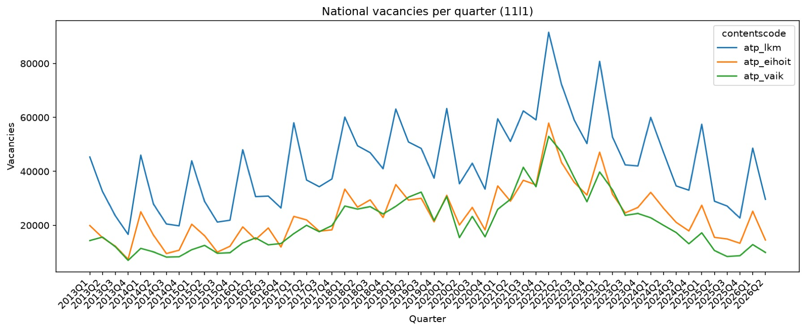
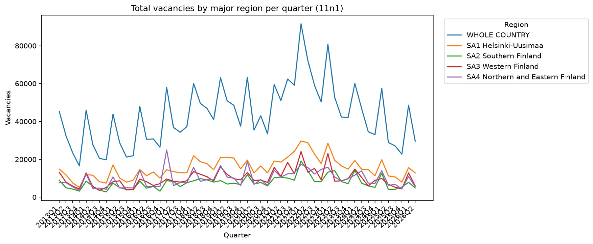
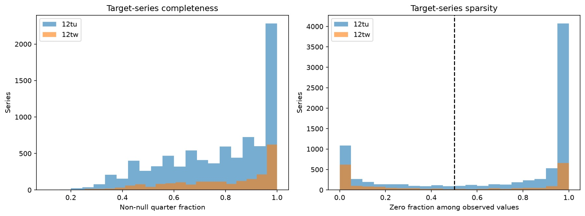
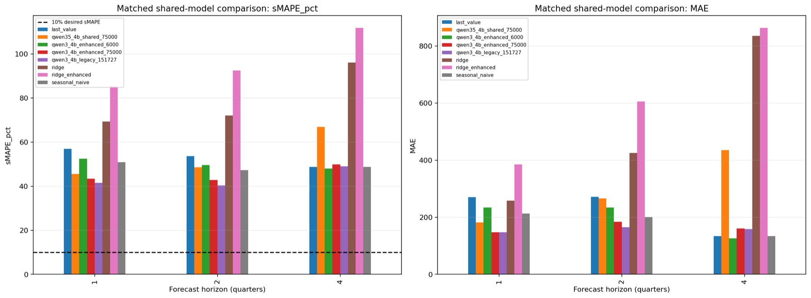

JobAI / Tekniset muistiinpanot
Koulutetun mallin on vielä osoitettava hyötynsä
Numeeriset ennusteet ja lähteisiin perustuvat selitykset erikseen. Vertailukohtana neljä perusmallia.
Valmis · voittaa vertailumenetelmät yhden ja kahden neljänneksen ennusteissa, ei neljässä
- Virallinen data
- Ennuste
- Arviointi
- Selitys
Ongelma
JobAI ennustaa Suomen neljännesvuosittaisia avoimia työpaikkoja yhden, kahden ja neljän neljänneksen päähän. Vakuuttava selitys ei osoita ennusteen olevan tarkka, joten projekti käsittelee kysymykset erikseen: hienosäädetty malli tuottaa luvun ja hakukerros selittää sen virallisista lähteistä.
Lukujen jäljitettävyys
Syötteet ovat viisi virallista taulukkoa (Tilastokeskus ja KEHA), yhteensä 957 781 arvosolua 14. syyskuuta 2026 ladatussa aineistossa. Jokainen lataus tallentaa kyselynsä, taulukon metatiedot, noutopäivän ja vastauksen tiivisteen, joten kokeen voi sitoa täsmälleen käytettyyn dataan. 139 438 neljännesvuosirivillä ei ole arvoa; putki säilyttää ne ja tarkistaa kaksoiskappaleet, puuttuvat neljännekset ja väärät lähdekuukaudet sen sijaan, että täyttäisi aukot hiljaa. Rakensin tämän haku- ja validointiputken.

Avaa täysikokoisena ↗
Avaa täysikokoisena ↗Jako ajan mukaan, ei taulukon
Jokainen jako tehdään ajan mukaan eikä satunnaisesti, koska satunnainen jako antaisi mallin nähdä ennustettavan sarjan tulevaisuuden. Koulutuksen tavoitteet päättyvät vuoteen 2022Q4, validointiennusteet tehdään ajanjaksolta 2023Q1–2024Q2 ja testaus alkaa 2024Q3 havaituin tavoittein vuoteen 2026Q2 asti. Valittu adapteri oppi 151 727 esimerkistä, jotka tulivat 1 679 ammatti- ja toimialasarjasta; kussakin on kahdeksan neljänneksen historia.

Avaa täysikokoisena ↗Aseta rima ennen koulutusta
Neljä yksinkertaista menetelmää asettaa rajan ennen hienosäätöä: toista viimeinen arvo, toista edellisen vuoden sama neljännes, ridge-regressio sekä ridge kausi- ja trendipiirtein. Malli, joka ei voita näitä, ei ole ansainnut monimutkaisuuttaan. Koulutuksen valmistuminen on välitavoite; vertailumenetelmien voittaminen on erillinen vaatimus.
Tulos: kaksi horisonttia kolmesta
Valittu malli on Qwen3-4B-adapteri, joka on hienosäädetty 4-bittisellä QLoRA:lla, ja yksi adapteri palvelee kaikkia kolmea horisonttia. 1 000 testitapauksen vastaavassa otoksessa horisonttia kohti se voitti parhaan vertailumenetelmän yhden neljänneksen päässä, noin 41 % sMAPE vastaan 51 %, ja kahden neljänneksen päässä, noin 40 % vastaan 47 %. Neljän neljänneksen päässä se ei voittanut: yksinkertainen viimeisen arvon ennuste oli hieman parempi sMAPE:lla ja selvästi parempi absoluuttisella virheellä.

Avaa täysikokoisena ↗Miksi tämä ei ole voitto
Hyvätkin tulokset ovat kaukana 10 %:n sMAPE-tavoitteesta, eikä yksikään malli saavuttanut sitä. Testijoukkoa on myös tarkasteltu toistuvasti kehityksen aikana, joten luvut ovat kehityksenaikainen vertailu, eivät takuu uudesta datasta. Lisäksi valitun ajon alkuperäinen koulutusmanifesti puuttuu, joten sen kehote ja historian pituus ovat dokumentoituja ilmoituksia, eivät tallennettua tietoa. Repositorio kirjaa mallin läpäisemättömäksi käyttöönottotarkastuksessa.
Selityksille oma näyttö
Hakukerros etsii virallisista tiedotteista ja vastaa lähdetunnisteilla ja lainauksilla, jotka tarkistetaan tekstiä vasten. Se selittää ennusteen mutta ei koskaan muuta sitä, mikä estää kerrontaa muuttumasta huomaamatta luvun lähteeksi. Streamlit-kojelauta tuo ennustekeskustelun ja arviointikaaviot samaan paikkaan.
Mitä tekisin seuraavaksi
Ajaisin vertailun uudelleen testijaksolla, jota kukaan ei ole tarkastellut, tallentaisin koulutusmanifestin koulutushetkellä, jotta jäljitettävyysaukko ei toistu, ja pitäisin viimeistä arvoa todellisena alarajana neljän neljänneksen päässä, kunnes malli selvästi voittaa sen.